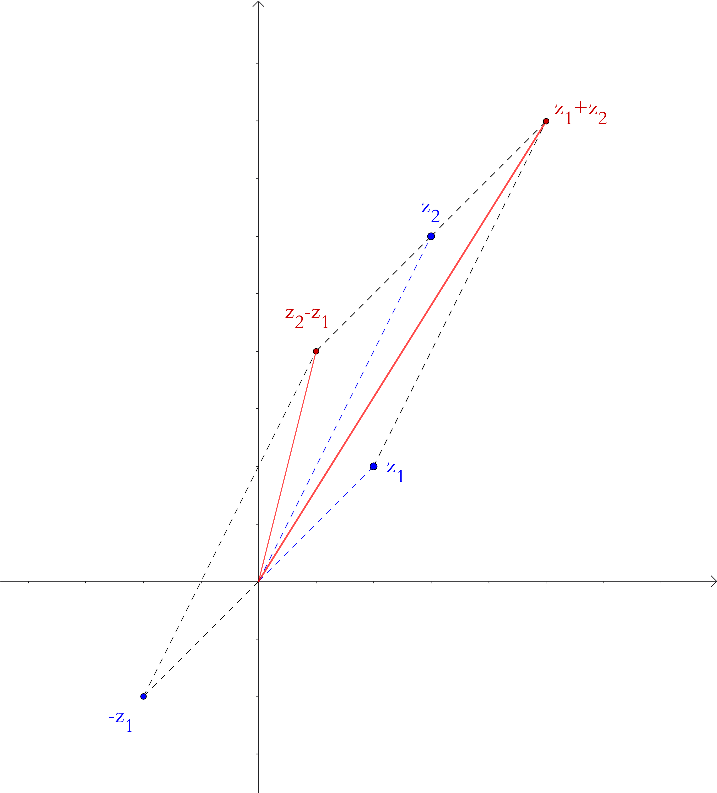

设\(x,y\in \mathbb{R}\)，则形如：
$$z = x + iy$$的数称为复数.
\(i\)为虚单位，有性质\(i^2 = -1 \Rightarrow 1/i = -i\).
\(x\)为复数的实部，记作\(x = \mathrm{Re}z\).
\(y\)为复数的虚部，记作\(x = \mathrm{Im}z\).
[注]一般情况下，复数无法比较大小.
虚部为\(0\)的复数，\(\mathbb{R}\subset \mathbb{C}\).
实部为\(0\)且虚部不为\(0\)的复数.
实部相等，虚部互为相反数的两个复数称为共轭复数.
若一个复数记为\(z\)，则其共轭复数记为\(\overline{z}\)
$$\overline{x + iy} = x - iy$$
对于\(\forall z = x+iy\)，总有平面直角坐标系上一点\(P(x,y)\)与之对应.
[注]\(z = 0\)时，辐角不确定.
\(z\neq 0\)时，由于三角函数的周期性，导致复数的辐角并不唯一，其加上\(2\pi\)的整数倍，仍表示同一个复数.
通常把\((-\pi,\pi]\)之间的辐角值称为辐角的主值.
由泰勒公式：
$$\begin{align} \sin x &= \sum\limits_{n=0}^\infty (-1)^n\frac{x^{2n+1}}{(2n+1)!}\\ &= \sum\limits_{n=0}^\infty i^{2n}\frac{x^{2n+1}}{(2n+1)!}\\ &= \frac{1}{i}\sum\limits_{n=0}^\infty \frac{(ix)^{2n+1}}{(2n+1)!}\\ &= \frac{1}{i}\left[ix + \frac{1}{3!}(ix)^3 + \frac{1}{5!}(ix)^5 + \cdots\right] \end{align}$$ $$\begin{align} \cos x &= \sum\limits_{n=0}^\infty (-1)^n\frac{x^{2n}}{(2n)!}\\ &= \sum\limits_{n=0}^\infty i^{2n}\frac{x^{2n}}{(2n)!}\\ &= \sum\limits_{n=0}^\infty \frac{(ix)^{2n}}{(2n)!}\\ &= 1 + \frac{1}{2!}(ix)^2 + \frac{1}{4!}(ix)^4 + \cdots \end{align}$$ $$\begin{align} \therefore \cos x + \sin x &= 1 + ix + \frac{1}{2!}(ix)^2 + \frac{1}{3!}(ix)^3 + \cdots\\ &= \sum_{n=0}^\infty\frac{1}{n!}(ix)^n \end{align}$$ $$\because e^x = \sum\limits_{n=0}^\infty\frac{1}{n!}x^n$$ $$\therefore \cos x + i\sin x = e^{ix}$$通常应用于根式.